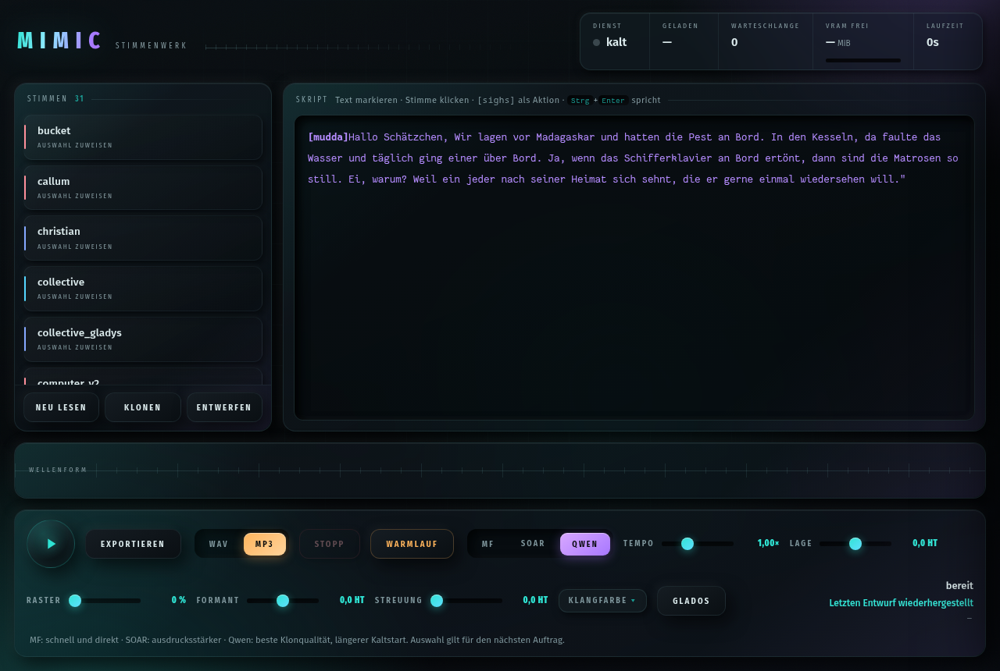
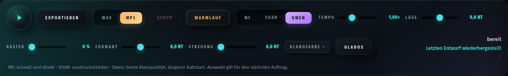
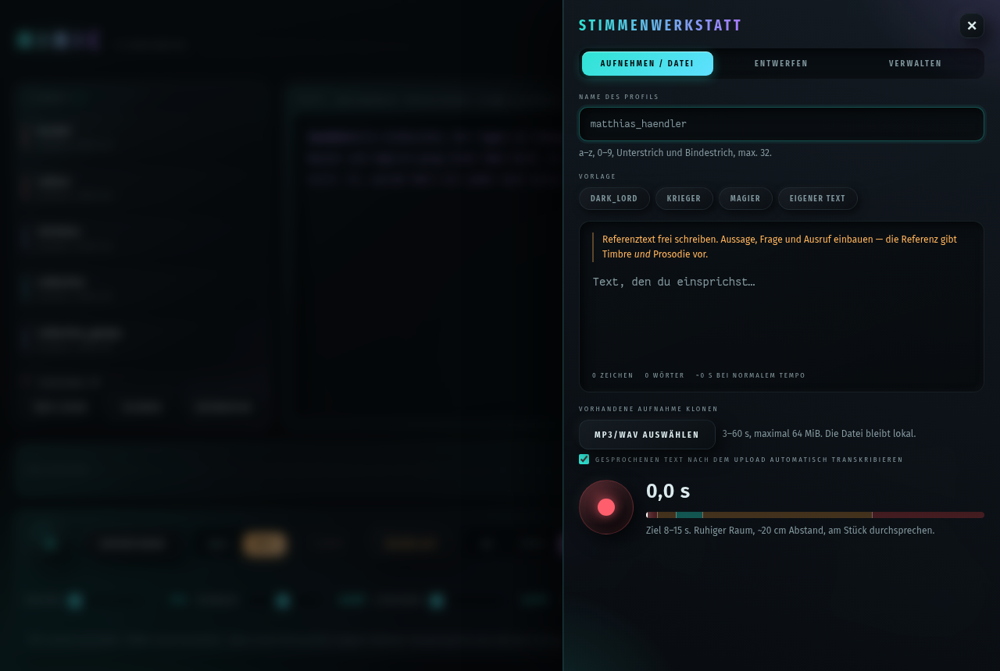
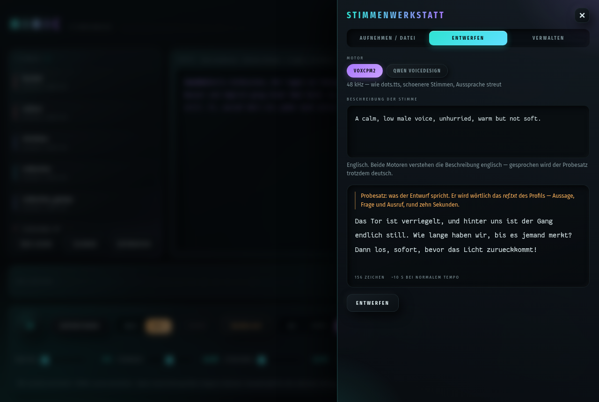
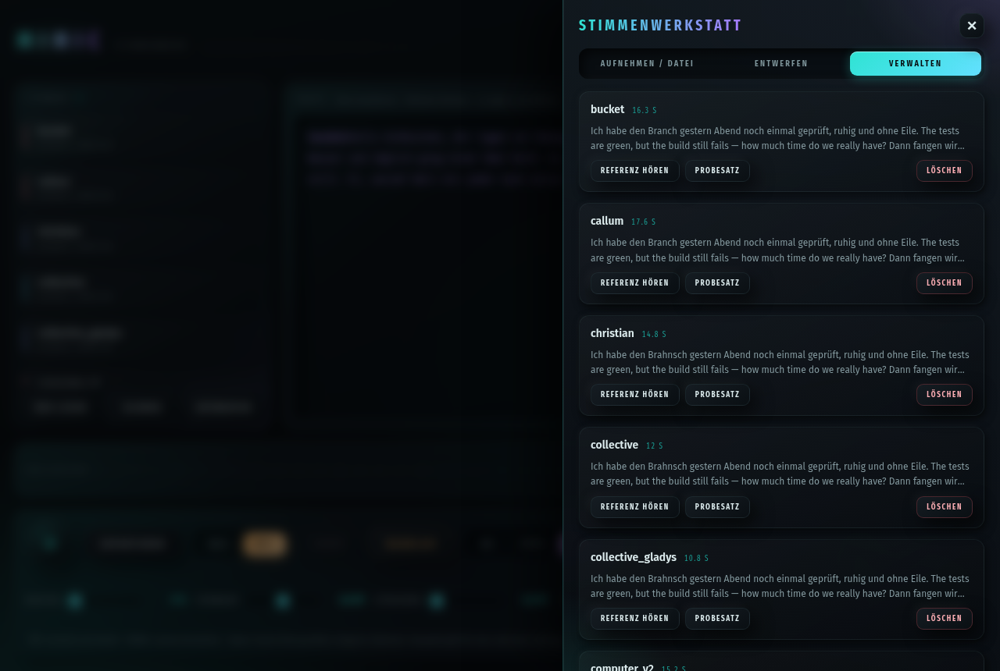

Mimic
Selbst gehostetes Voice-Cloning-TTS auf Basis von dots.tts (Apache-2.0). Läuft vollständig lokal auf der eigenen GPU, spricht mit geklonten Stimmen und lässt sich per Fenster, Kommandozeile oder HTTP-Dienst ansteuern.
Überblick
Mimic besteht aus einem leichten Frontend-Dienst (validiert, immer erreichbar) und einem GPU-Worker (besitzt exklusiv die Grafikkarte, lädt bei Bedarf nach und beendet sich nach Leerlauf von selbst). Beide werden über Unix-Sockets von systemd bei Bedarf gestartet — im Ruhezustand läuft kein Prozess und belegt keinen VRAM.
Drei Nutzer greifen darauf zu:
Charakterstufe, Streaming-Betrieb — spricht laufend, in Echtzeit.
Sprachaufnahmen zur Bauzeit, offline erzeugt.
Drei Motoren
| Modus | Modell | Charakter |
|---|---|---|
| mf | dots.tts-mf | Realtime, schnell und direkt — Vorgabe für Streaming |
| soar | dots.tts-soar | Batch, ausdrucksstärker — besser für gespeicherte Dateien |
| qwen | Qwen3-TTS-1.7B | beste Klonqualität, längerer Kaltstart, läuft in isoliertem Subprozess |
Alle drei können nicht gleichzeitig geladen sein — ein Moduswechsel ist ein kontrollierter Prozess-Neustart des Workers.
Installation
uv tool install --python 3.12 .
mimic setupmimic setup legt den Stimmenordner an, installiert die fünf
systemd-Unit-Dateien aus systemd/, aktiviert die Sockets und prüft
am Ende per /status, ob der Dienst antwortet. Zweimal aufrufen ist
gefahrlos — geänderte Units werden ersetzt und die betroffenen Sockets neu
gestartet. Der Befehl braucht das Repo-Verzeichnis, weil die Unit-Dateien von
dort kopiert werden.
Optionale Umgebungen nachrüsten
| Befehl | Wofür |
|---|---|
mimic setup --entwurf | beide Entwurfsmotoren (voxcpm + qwen), Stimmen entwerfen |
mimic setup --entwurf moss | Eindeutschen Version 1 |
mimic setup --entwurf qwen-klon | Eindeutschen Version 2 + direkter Qwen-Sprechmodus |
mimic setup --transkription | lokale Referenztext-Erkennung (faster-whisper) |
venv unter ~/.local/share/mimic/ — nur so, weil jeder Motor eigene, untereinander unverträgliche torch-/transformers-Versionen braucht. Sie werden nur während des jeweiligen Vorgangs als Subprozess gestartet, nicht dauerhaft geladen (Qwen als Sprechmodus ist die Ausnahme: er bleibt nach dem ersten Laden warm).Arbeitsflächen-Starter
install -Dm755 systemd/mimic.desktop ~/.local/share/applications/mimic.desktop
ln -sfn ~/.local/share/applications/mimic.desktop "$(xdg-user-dir DESKTOP)/mimic.desktop"Das Fenster
mimic guimimic gui öffnet ein Chromium-App-Fenster gegen einen kurzlebigen
Loopback-HTTP-Server, der nur solange lebt wie das Fenster selbst. Links stehen
die ladbaren Stimmen, rechts das Skriptfeld.

Skript schreiben
Text markieren und links eine Stimme anklicken weist genau dieser Auswahl den
Sprecher zu. Im Skript erscheint der Wechsel als [stimme], Kopf und
zugehöriger Text tragen dieselbe, stabile Farbe. Die Köpfe steuern nur den Parser
und werden nicht mitgesprochen.
[stimme]Text…— wechselt den Sprecher ab hier#stimme: "Text"— altes Format, bleibt lesbar[sighs],[laughs],[whispers]— Regieaktionen, bleiben im Modelltext (Motorfähigkeit, keine Garantie)// Kommentar— wird beim Sprechen übersprungen- Eine Zeile ohne Kopf erbt den Sprecher von oben
Strg+Enter spricht sofort los.
Transportleiste
| Element | Wirkung |
|---|---|
| ▶ Abspielen | streamt live durch pw-cat |
| Exportieren | sammelt dieselben Blöcke in eine Datei — WAV oder MP3 (192 kbps, lame/ffmpeg) |
Stopp / Esc | bricht sofort ab, Worker erkennt den Abbruch |
| Warmlauf | lädt den gewählten Motor mit der gewählten Stimme vor |
| MF · SOAR · QWEN | Motorwahl für den nächsten Auftrag |
Der letzte Skriptentwurf (Text, Stimme, Motor, Format, Regler) wird geschützt
unter $XDG_STATE_HOME/mimic/gui-draft.json gespeichert und beim
nächsten Öffnen automatisch wiederhergestellt.
Klangregler

| Regler | Bereich | Wirkung |
|---|---|---|
tempo | 0,5–2,0× | Sprechgeschwindigkeit; unter 0,5 zerfällt die Prosodie, über 2,0 unverständlich |
tonhoehe (Lage) | −12 bis 12 HT | feste Tonhöhenverschiebung, ±1 Oktave |
raster | 0–1 | zwingt jede Silbe aufs Halbtonraster — der GLaDOS-Kern |
formant | −12 bis 12 HT | verschiebt die Klangfarbe, ohne die Tonhöhe mitzunehmen |
streuung | 0–4 HT | zufällige Silben-Abweichung, simuliert Handarbeit an der Tonhöhe |
hall | 0–1 | Nachhall, 0 trocken bis 1 voller Raum |
verzerrung | 0–1 | weiche Sättigung, 0 sauber bis 1 übersteuert |
kruemel | 0–1 | Bitcrusher, 0 glatt bis 1 vier Bit |
breite | 0–1 | Chorus bis Chor, 0 eine Stimme bis 1 vier Kopien |
settings.json fest eingestellten Profilwert drauf — Profil −3 Halbtöne plus Regler +1 ergibt −2. So bleibt eine fest eingestellte Stimme trotzdem nachstellbar.GLaDOS-Preset
Kein eigener Effekt, sondern eine Kombination aus Tonhöhenkorrektur, nach Valves eigener Anleitung zu Ellen McLains Originalaufnahme (pitch constrained, pitch modulation suppressed, formant moved up):
{"tonhoehe": 2.0, "raster": 1.0, "streuung": 1.0, "formant": 3.0}Zum Ausprobieren ohne eigenes Profil: mimic say "…" --glados
Benannte Klangfarben
Zusätzlich zu den Live-Reglern gibt es fünf benannte Effekte, die dauerhaft in
settings.json je Stimme hinterlegt werden (Reiter Klangfarbe):
| Name | Klangbild |
|---|---|
roboter | Tremolo/Ringmodulation bei 55 Hz — metallische Beimischung |
tv | Bandpass 320–3000 Hz, weiche Sättigung, leichtes Rauschen — Lautsprecher von 1985 |
telefon | Butterworth-Bandpass 300–3400 Hz, Rauschen vor dem Filter — Leitungsrauschen |
vocoder | Kanalvocoder, 16 Bänder, Sägezahnträger folgt der Grundfrequenz |
kollektiv | zwei verstimmte, verzögerte Kopien plus leichtes Tremolo — "viele sprechen dasselbe" |
Stimmenwerkstatt
Der Knopf Klonen öffnet die Werkstatt-Schublade mit drei Reitern.
Aufnehmen / Datei

Profilname wird live gegen die Namensregel geprüft (Kleinbuchstaben, Ziffern,
_/-, max. 32 Zeichen, Beginn alphanumerisch). Vorlagen
aus charaktere.py liefern Regieanweisung und Referenztext gleich mit;
für eigene Stimmen wird der Text frei geschrieben — er sollte Aussage, Frage und
Ausruf enthalten, weil dots.tts Prosodie mitklont.
Der Aufnahmeknopf nimmt direkt mit 48 kHz mono ins Profilverzeichnis auf. Die Zielzone zeigt live: unter 3 s lehnt der Dienst ab, 8–15 s ist der einzige gemessene Bereich, ab 60 s ist Schluss, nach 90 s stoppt eine Notbremse eine vergessene Aufnahme.
Statt Mikrofon kann auch eine vorhandene MP3- oder WAV-Datei gewählt werden (bis 64 MiB, lokal per ffmpeg gewandelt). Der Referenztext lässt sich von Hand eintragen oder nach dem Upload lokal per faster-whisper automatisch transkribieren — das Ergebnis landet zur Kontrolle im Textfeld und wird erst mit Behalten übernommen.
Entwerfen

Erzeugt eine Stimme aus einer Beschreibung statt sie einzusprechen — Details unter Stimmen entwerfen.
Verwalten

Referenz anhören, Probesatz sprechen, löschen — Löschen ist zweistufig, der erste Klick schärft nur. Aufnahme und Sprechauftrag schließen sich gegenseitig aus.
Kommandozeile
Ein dünner Client, der sich per Unix-Socket mit dem Frontend verbindet — alles Modellwissen bleibt im Worker.
| Befehl | Beispiel | Zweck |
|---|---|---|
say | mimic say "Hallo" --voice matthias --mode mf | Text sprechen — live oder mit -o datei.wav in eine Datei |
status | mimic status | Diensteststatus als JSON |
voices | mimic voices | Profile mit Dauer, ! markiert Ausreißer |
gui | mimic gui | öffnet das Fenster |
record | mimic record matthias_krieger | interaktive Terminal-Aufnahme |
import | mimic import name datei.mp3 --text "…" | Profil aus vorhandener Audiodatei |
design | mimic design "a calm voice" --voice x | Stimme aus Beschreibung entwerfen |
eindeutschen | mimic eindeutschen name datei.mp3 | fremde Stimme eindeutschen (v1, MOSS) |
eindeutschen2 | mimic eindeutschen2 name datei.mp3 | fremde Stimme eindeutschen (v2, Qwen x-vector) |
setup | mimic setup [--entwurf|--transkription] | Dienst einrichten / Umgebungen nachrüsten |
Gemeinsame Klangregler-Optionen bei say: --tempo --tonhoehe
--streuung --raster --formant --hall --verzerrung --kruemel --breite --glados.
Exit-Code 0 bei Erfolg, 1 bei jedem Anwendungsfehler, 130 bei Strg+C.
Stimmprofile
Ein Profil ist ein Verzeichnis unter
~/.local/share/mimic/voices/<name>/, Modus zwingend
0700:
| Datei | Pflicht | Anforderung |
|---|---|---|
ref.wav | ja | 48 kHz mono, 3–60 s, Modus 0600, max. 10 MiB |
ref.txt | ja | UTF-8, wörtliches Transkript, Modus 0600, max. 4 KiB |
settings.json | optional | Sprache, Klangregler — siehe unten |
qwen-source.wav | optional | nur bei eindeutschen2-Profilen, Original für den direkten Qwen-Modus |
Namensregel: ^[a-z0-9][a-z0-9_-]{0,31}$ — Kleinbuchstaben/Ziffern,
Beginn alphanumerisch, _/- erlaubt, max. 32 Zeichen.
O_NOFOLLOW, Rechte- und Größenprüfung vor dem Lesen) — ein nachträglicher Symlink-Tausch während der Prüfung kann nicht mehr umlenken.Stimmeinstellungen
settings.json gilt dauerhaft für eine Stimme: Sprache (de/en,
Vorgabe en — bewusst, weil de englischen Fachbegriffen
deutsche Phonetik aufzwingt), speaker_scale (0,5–2,0), eine benannte
Klangfarbe und die vier Klangregler tonhoehe, raster,
streuung, formant. Die Vorlage
settings.example.json im Repo erklärt jeden Schlüssel samt Grenzen.
Stimmen entwerfen
Statt einzusprechen: eine Stimme aus einer englischen Beschreibung generieren. Zwei Motoren, beide Apache-2.0, beide sprechen den Zieltext nativ Deutsch:
| Motor | Modell | Rate | Charakter |
|---|---|---|---|
voxcpm (Vorgabe) | VoxCPM2, 2B | 48 kHz | schönere Stimmen, Aussprache streut gelegentlich |
qwen | Qwen3-TTS-1.7B VoiceDesign | 24 kHz | fehlerfreies Deutsch, halbe Bandbreite |
Der Probesatz wird wörtlich das ref.txt des späteren Profils — er
steht unter denselben Anforderungen wie ein eingesprochener Referenztext (Aussage,
Frage, Ausruf, rund zehn Sekunden). Bis zu vier Kandidaten je Lauf, jeder einzeln
anhörbar und unter einem Namen zu behalten — von da an ist es eine normale Stimme.
Kein Motor läuft im Worker-Prozess: beide bringen eigene, mit dots.tts
unverträgliche torch-/transformers-Versionen mit und laufen deshalb als
Subprozess in einer eigenen venv, die nur während des Entwurfs lebt.
Fremde Stimmen eindeutschen
Eine anderswo erzeugte oder gekaufte Stimme spricht Deutsch oft mit fremdem
Einschlag. mimic import kann das nicht heilen, und dots.tts auch
nicht: die Engine hat keine Sprachmarke, sie klont, was sie hört, Akzent
inklusive. Ein Filter hilft nicht — ein Akzent ist kein Frequenzband, sondern
eine Aussprache. eindeutschen schiebt deshalb einen Schritt davor,
der die Stimme zuerst auf Deutsch neu sprechen lässt.
mimic eindeutschen
MOSS-TTS-Local-Transformer (4B) hört die komplette
Originalaufnahme als Kontext, behält die Stimmfarbe und spricht den Text mit
language="German" neu.
Bekannte Schwäche: kann englische Phonetik/Rhythmus der Vorlage teilweise mitziehen, weil die ganze Aufnahme als Kontext dient.
mimic eindeutschen2
Qwen3-TTS Base im x-vector-only-Modus:
aus der Vorlage wird nur die Sprecheridentität konditioniert, keine
englischen Audio-Codes oder Text-Prompts. Der deutsche Text wird nativ
erzeugt.
Legt zwei Referenzen an: ref.wav (deutsch, für MF/SOAR) und
qwen-source.wav (Original, für den direkten Qwen-Modus).
uv run mimic setup --entwurf moss # einmalig, laedt einige GB
uv run mimic eindeutschen ether ~/Downloads/voice_preview_ether.mp3 --force
uv run mimic setup --entwurf qwen-klon
uv run mimic eindeutschen2 nordom_v2 ~/Documents/archived_voices/Nordom.mp3--wuerfe) auf den 8–15-s-Zielbereich und warnen ausdrücklich, statt einen Fehltreffer stillschweigend zu importieren.Aussprache
~/.local/share/mimic/pronunciation.json ersetzt Wörter
vor der Synthese, case-insensitiv, mit Mehrwort-Einträgen gegen
Homographen (weg da → weck da, ohne dabei
"Der Weg ist lang" zu verändern). Abschaltbar je Anfrage über
"aussprache": false — Vorgabe ist an.
Dienste & Protokoll
Zwei getrennte Prozesse, jeder über einen eigenen Unix-Socket per systemd aktiviert:
| Frontend | Worker | |
|---|---|---|
| GPU-Zugriff | nein | ja, exklusiv |
| Lebensdauer | dauerhaft | idle-exit nach 120 s |
| Validierung | Text-Länge, Regler-Grenzen | vertraut dem Frontend |
| Speichergrenze | 512 MiB | 10 GiB |
Frame-Protokoll
Binäres, modellunabhängiges Format: 1 Byte Typ + 4 Byte Big-Endian-Länge + Payload.
| Typ | Payload | Wann |
|---|---|---|
H | JSON: sample_rate, channels, format, request_id | einmalig, zu Beginn |
A | rohes 16-bit-PCM | beliebig oft |
E | JSON: status, samples / reason, message | einmalig, am Ende |
GPU-Worker
Der Worker hält eine Prioritätswarteschlange (Modus mf vor
soar vor qwen, dann FIFO) und einen einzigen
Owner-Thread, der für die gesamte Prozesslaufzeit das Modell besitzt.
Wache gegen hängende Modellaufrufe
Ein eigener Wächter-Thread reißt den Prozess kontrolliert ab, wenn ein Modellaufruf deutlich länger dauert als jede gemessene Anfrage (Standard 120+60 s, Qwen 240+60 s) — der einzige Ausweg, wenn ein CUDA-Aufruf komplett hängt, weil sonst der einzige Modellbesitzer-Thread für immer blockiert bliebe.
VRAM-Management
- Freien VRAM vor jedem Laden per
nvidia-smiprüfen (mind. 8 GB) - Cache nach jedem Auftrag/Warmlauf freigeben
- Optionale Kooperation mit einem externen GPU-Hub: fragt vor dem Laden um Erlaubnis; ein nicht erreichbarer Hub gilt als offen (Fail-Open), eine erreichte, aber ablehnende Antwort blockiert das Laden
Qwen als isolierter Subprozess
Läuft nicht im Worker-Prozess, sondern über eine dots.tts-kompatible Hülle um
einen dauerhaft warmgehaltenen Subprozess in der isolierten
entwurf-venv-qwen-klon-Umgebung — Kommunikation über
stdin/stdout-JSON-Zeilen.
Streaming-Ablauf je Auftrag
Text → Aussprachetabelle + Zahlenausschreibung → Satzsegmentierung → je Satz bis zu vier Generierungsversuche mit Stummerkennung → Klangkette auf jeden PCM-Block → Frames sofort an den Client. Zwischen Sätzen eine kurze Atempause, nur an echten Satzenden.
systemd-Betrieb
Fünf User-Units unter ~/.config/systemd/user/, installiert von
mimic setup:
| Unit | Rolle |
|---|---|
mimic.socket / .service | Frontend, dauerhaft aktiv, MemoryMax=512M |
mimic-worker.socket / .service | GPU-Worker, geplanter Idle-Exit ist der Normalfall, MemoryMax=10G |
mimic-worker-reset.service | fängt einen sofortigen Neustart-Sturm ab, falls der Worker stirbt, bevor er eine wartende Verbindung annimmt |
mimic.desktop | Arbeitsflächen-Starter für mimic gui |
systemctl --user reset-failed aufgerufen wird — systemds eigenes Start-Ratenlimit würde die Socket-Unit sonst in den Zustand failed versetzen.Tests
bash tests/run.sh # GPU-frei, alle Testdateien
bash tests/run.sh --gpu # zusaetzlich destruktive Eindaemmungsproben| Datei | Deckt ab |
|---|---|
test_phase1.py | Frontend↔Worker-Grundfunktionen, VRAM-Erschöpfung, Idle-Exit |
test_phase2.py | GPU-Hub-Protokoll, Effektkette, GUI-Auth, Journal-Logging |
test_entwurf.py | Entwurfsreiter ohne GPU, Worker-Wache, Symlink-Sicherung |
test_ansage.py | Ansage-Stop-Hook ohne Audio/laufenden Dienst |
test_gpu_containment.py | echte, destruktive Eindämmungsproben — nur mit --gpu |
Ansage
tools/ansage.py hängt als Stop-Hook in Claude Code und lässt Mimic
sagen, dass eine Aufgabe fertig ist — "Fertig." plus die ersten Sätze der letzten
Antwort. Scheitert absichtlich lautlos, wenn der Dienst aus ist oder keine MAC
hinterlegt wurde.
tools/einrichten.sh # installiert, hinterlegt die MAC, haengt den Hook ein, probtFehlerbehebung
| Symptom | Ursache / Abhilfe |
|---|---|
| Dienst dauerhaft nicht erreichbar nach Absturz | systemctl --user reset-failed mimic-worker.socket mimic-worker.service — oder abwarten, mimic-worker-reset.service tut das automatisch |
| MP3-Export-Knopf ist grau | weder lame noch ffmpeg installiert |
load_denied beim Laden | ein externer GPU-Hub hat die Erlaubnis verweigert — anderer Prozess belegt die Karte |
| Qwen-Schalter ist deaktiviert | mimic setup --entwurf qwen-klon noch nicht ausgeführt |
| Entwurf hängt bei "Modell lädt" | bekannte Falle bei eigenen Erweiterungen: stderr muss in stdout umgeleitet sein, sonst blockiert der Subprozess nach 64 KB |
| Aufnahme unter 3 s / über 60 s | Dienst lehnt hart ab — Zielbereich ist 8–15 s |